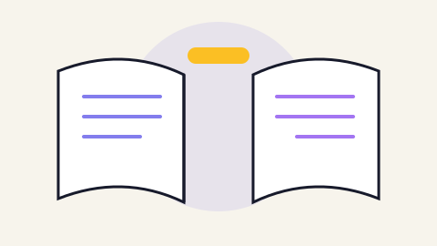

القراءة السريعة مفيدة للمحتوى الذي نريد فقط أن نأخذ منه عنواناً أو فكرة. أما الكتب التي نريد أن تغيّر مهارة عندنا فتحتاج نوعاً آخر من القراءة: أبطأ، وأقل، وأكثر تركيزاً.
لماذا ننسى ما نقرؤه؟
لثلاثة أسباب متكررة:
- التصفّح السلبي: نمرّ على العين دون أن نسأل سؤالاً حول ما نقرأ.
- الغياب عن التطبيق: لا نصوغ الفكرة بأسلوبنا، فتبقى معلّقة في الذاكرة القصيرة.
- الكثرة بلا انتقاء: نبدأ كتاباً كل أسبوع فلا يكتمل أي منها.
لذلك تعمل القراءة البطيئة على ثلاث مراحل: قبل، أثناء، وبعد.
المرحلة الأولى: التمهيد (١٠ دقائق)
قبل أن تقرأ صفحة واحدة، اعمل هذا الفحص السريع:
- اقرأ الفهرس كاملاً، واختر منه ثلاثة فصول تهمّك فعلاً.
- اقرأ مقدمة الكتاب وخاتمته — الخاتمة تعطيك الخريطة كاملة.
- اكتب على ورقة سؤالاً واحداً: «ماذا أريد أن أخرج به من هذا الكتاب؟».
الكتاب الذي لا تستطيع صياغة سؤال له، ليس كتابك الآن. أعده إلى القائمة بلا شعور بالذنب.
المرحلة الثانية: القراءة السؤالية
اقرأ بقلب هادئ، وأوقف كل ما يشتّت: هاتفك في غرفة أخرى، ومتصفحك مغلق. ثم التزم بأربع قواعد:
- لا تُعلّم إلا ما تستطيع شرحه: ضع خطاً تحت جملة فقط إن كان بوسك تفسيرها لصديق.
- اسأل بعد كل فصل: ما الفكرة التي لو نسيتها أضعت الفصل كله؟
- اكتب في الهامش بحرفك: التلخيص بالفكرة المكتوبة أقوى من مجرّد الخطّ تحت النص.
- لا تقرأ أكثر من ٢٥ دقيقة متصلة: ثم خمس دقائق راحة بلا شاشة.
المرحلة الثالثة: الفلترة بعد أسبوع
هذه المرحلة هي الأهم، ويكتفي بها معظم القرّاء عن غيرها:
- بعد إغلاق الكتاب بأسبوع، اكتب من الذاكرة أهم ثلاث أفكار وصلتك.
- افتح الكتاب وقارن: أتذكرت الأفكار المهمة أم أفكاراً هامشية؟
- اسأل: ما الذي تغيّر في عملي فعلاً بسبب هذا الكتاب؟
- اختر عملاً واحداً مُنفذاً هذا الأسبوع، لا أكثر.
نظام ملاحظات بسيط لا يحتاج برامج
| العنصر | الوظيفة | الحد الأقصى |
|---|---|---|
| الفكرة | الجملة الأساسية بأسلوبك | سطر واحد |
| المصدر | اسم الكتاب والصفحة | سطر واحد |
| التطبيق | ماذا سأفعل بها هذا الأسبوع | سطران |
صفحة واحدة لكل كتاب كافية. أما الكتب التي أعطتك أكثر من ذلك، فخصّص لها وقتاً ثانياً كاملاً بدل تلخيص حرفي لا تقرؤه بعد يومين.
كم كتاباً في السنة؟
الرقم غير مهم، لكنه مفيد كمعيار. غالبية القرّاء الجدّيين يقرؤون بين ١٢ و ٢٤ كتاباً سنوياً، أي كتاب إلى كتابين شهرياً. الفرق بين ١٢ و ٣٦ لا يأتي من السرعة، بل من استبعاد ما لا يخدم هدفك لا أكثر.
اقرأ أقل وطبّق أكثر. الكتب التي لا تترك أثراً في تصرفاتك هي كتب قرأتها ولم تقرأها.
الخلاصة في ثلاث نقاط
- قبل القراءة: فهرس ومقدمة وخاتمة، ثم سؤال واحد مكتوب.
- أثناء القراءة: علّم ما تستطيع شرحه فقط، ولخّص كل فصل في سطر.
- بعد أسبوع: اكتب ثلاث أفكار من الذاكرة، ونفّذ تطبيقاً واحداً.